20 candidates for Emmet's technique library (session 3D, H-26). Each was found in your instruction books and ranked by how widely official models in the LDraw OMR join its key parts (1315 sets mined). Each picture is a render of my sketch of it in Emmet's DSL, which validates with no findings; an accepted sketch becomes the technique, with its tests and render, and a rejected one is dropped. Nothing is taken from the models' files or the books' pages (D-48). Every candidate starts as Accept: switch the ones you don't want, add a note if it helps, then copy your answers and paste them to Claude.
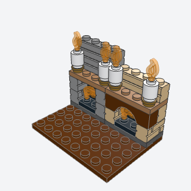
hearth_fireplacea brick fireplace with a fire in its firebox, a mantel shelf with candles, and a flue rising behind, built apart and placed against a wall.
The living room's focal point against the chimney wall: a fire in a masonry firebox, a mantel with candles, and a flue that meets the chimney stack.
Note: Merges FM brick_built_hearth_with_arch as arch=True, using an Arch 1 x 4 (3659) over the opening rather than a pair of quarter-circle arch bricks. The triple flame (64647) and candle flames (37775) have no connector data; they're placed by their body boxes on the grate and candle studs.
x, y, z, facing, arch, flue, candles, color, mantel, arch_colorbatch-9/hearth_fireplace.py98283 + 64647 + 3020 (some of its parts weren't confirmed from the book; I'd pin them when writing it)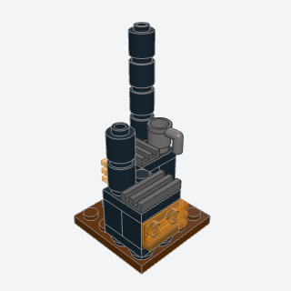
wood_stovea black iron stove on short legs with a glowing grate door, a hotplate, a kettle, and a stovepipe, built apart and placed.
A small iron stove for a cottage kitchen or a cabin, with its pipe rising up the wall; pairs with the woodpile technique for firewood.
Note: The book puts a grille over a glowing tile; both can't sit on the same side studs, so the door is one Trans-Orange grille tile (2412b is made in it). Firewood is left to woodpile.
x, y, z, facing, pipe, kettle, color, glowbatch-9/wood_stove.py2412b + 11211 + 3062b (some of its parts weren't confirmed from the book; I'd pin them when writing it)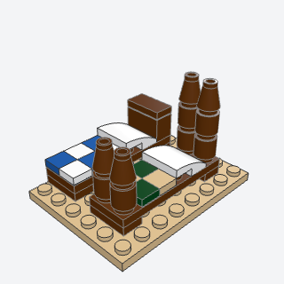
figure_beda single bed 2 x 6 studs for a figure, with a headboard or four posts, a pillow, and a checked quilt, built apart and placed.
Every bedroom or loft needs a bed a figure can lie in; 2 x 6 fits along a wall or under a roof slope.
Note: Four-poster from 43268 and FM short_bed_four_post merged as posts=True, with cones as post caps rather than bars and round plates.
x, y, z, facing, posts, frame, quilt, quilt2, pillowbatch-9/figure_bed.py3795 + 15068 + 3070b (some of its parts weren't confirmed from the book; I'd pin them when writing it)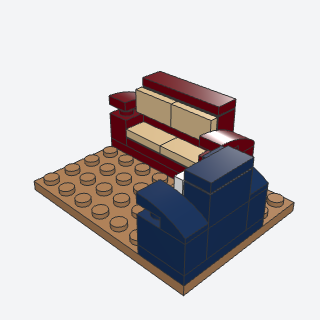
armchair_and_sofaan upholstered seat a figure sits in, with arms, a seat cushion, and a padded back, from an armchair 4 studs wide to a sofa 8 wide, built apart and placed.
Seating for a living room, a pub, or a waiting room, one technique from a 4-wide armchair to an 8-wide sofa.
Note: Merges HC armchair_and_sofa and TM small_sofa as kind=. The armchair is 4 wide so a figure fits between the arms; the book's 2 x 2 armchair has no room for arms.
x, y, z, kind, length, facing, color, cushionbatch-9/armchair_and_sofa.py11211 + 11477 + 3069b (some of its parts weren't confirmed from the book; I'd pin them when writing it)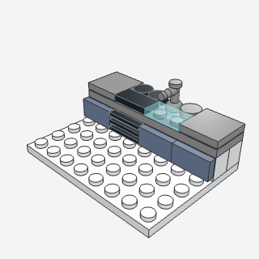
kitchen_countera run of kitchen units 2 deep, each 2 studs wide, a cabinet, a stove, or a sink, under one worktop, built apart and placed along a wall.
The kitchen's working wall: a run of cabinets, a stove, and a sink under one worktop, sized for any length of wall.
Note: Merges TM kitchen_line. No fridge unit (a tall unit needs its own door handle on side studs); the sink is a trans-light-blue tile with a tap, as there is no figure-scale sink part.
x, y, z, units, facing, color, doors, topbatch-9/kitchen_counter.py11211 + 4599b + 98138 (some of its parts weren't confirmed from the book; I'd pin them when writing it)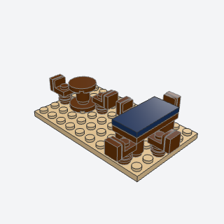
table_and_chairsa small round table on one leg, or a long table on four, with up to four chairs set round it, built apart and placed.
A dining or kitchen table with chairs set round it, the core of any furnished room.
Note: The round table is centered on 18674's one middle stud, half a stud off the grid. The book's Tile 2 x 2 Round (4150) on a round brick's hollow stud validates as floating (a validator gap, or the cross stud isn't modeled), so the top is 14769, which seats. Chair backs reach 0.6 studs past the set's footprint.
x, y, z, shape, chairs, facing, wood, topbatch-9/table_and_chairs.py18674 + 14769 + 36840 (some of its parts weren't confirmed from the book; I'd pin them when writing it)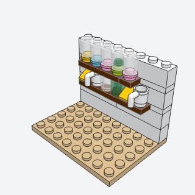
wall_shelfa shelf set into a wall as a plate course that reaches a stud into the room, with bottles, cheese, cups, or rows of sweet jars on it.
Shelves of bottles, cheese, and cups in a kitchen, or sweet jars in a shop, set into any wall course.
Note: The book hangs a 1 x 2 plate on an 87087 side stud; a plate on a side stud stands upright, so this lays a 2-deep plate in the wall course with one row reaching into the room instead. Merges TM jar_shelf as items="jars".
x, y, z, length, facing, items, seed, colorbatch-9/wall_shelf.py3020 + 95228 + 3062b (some of its parts weren't confirmed from the book; I'd pin them when writing it)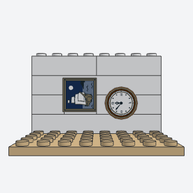
wall_picture_and_clocka framed picture or a round clock hung on side studs in a wall, facing into the room.
Pictures and clocks on the walls are the cheapest way to make a room feel lived in.
Note: Each printed tile was made in one color only (3068bp71 Dark Tan, 3068bp74 Reddish Brown, 3068bp8g White, 14769p0a Reddish Brown, 14769p0f White), so the prints carry their own colors.
x, y, z, kind, facing, picture, clock, color, framebatch-9/wall_picture_and_clock.py11211 + 3068bp71 + 87087 + 14769p0a (some of its parts weren't confirmed from the book; I'd pin them when writing it)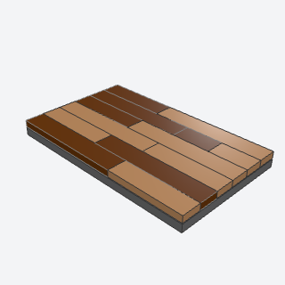
plank_floora wooden floor of long tile boards in two wood tones, every row's ends staggered from the row before.
A wooden floor for a living room, pub, or shop that reads as old boards, not a grid of tiles.
Note: VARIANT of tiled_floor: seeded board lengths with staggered ends and two wood tones, tiles only (no plate layer). The Tile 1 x 8 (4162) was never made in Medium Nougat, so the default sizes stop at 6; pass sizes with 8 for one-tone floors.
x, y, z, length, depth, axis, seed, color, color2, sizesbatch-9/plank_floor.py2431 + 6636 + 63864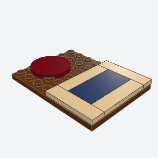
floor_ruga flat rug of tiles on a room's floor studs, round or rectangular with a border.
A rug before the fire or beside the bed marks out a room's zones on a plain floor.
Note: VARIANT of tiled_floor's border pattern, tiles only. The round rug is one Tile 3 x 3 Round (67095): a two-tone ring of quarter-ring tiles (27925, 79393) can't take a middle tile because the validator's boxes overlap. The book's rug dropped at an angle on a jumper is left out (off-grid angle).
x, y, z, shape, length, depth, color, borderbatch-9/floor_rug.py67095 + 3069b + 2431 (some of its parts weren't confirmed from the book; I'd pin them when writing it)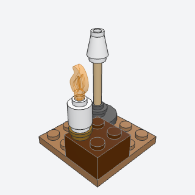
floor_lamp_and_candlea standing lamp with a shade on a slim pole, or a candle in a brass dish, built apart and placed.
Light sources for any room: a standing lamp by a chair, candles on a mantel, table, or piano.
Note: The bar reaches a plate up into the cone shade: with the cone sitting on the bar's top the validator calls it floating. The lamp stands half a stud off the grid on 18674's middle stud.
x, y, z, kind, pole, shade, waxbatch-9/floor_lamp_and_candle.py87994 + 4589 + 85861 + 37775 (some of its parts weren't confirmed from the book; I'd pin them when writing it)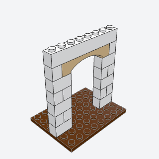
interior_arch_doorwaya partition wall one brick thick between two rooms, with a doorway 4 studs wide closed at the top by a raised arch in a contrasting color.
Joins two rooms through a partition wall with an arched opening, as cottages and town houses do.
Note: VARIANT of brick_built_arch: an Arch 1 x 6 Raised in a one-brick partition built with m.wall, the course under it opened for the arch's legs.
x, y, z, length, axis, gap, opening, rows, color, archbatch-9/interior_arch_doorway.py92950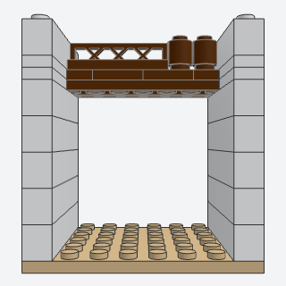
loft_half_floora sleeping loft over part of a room, a floor of two plate layers spanning between the end walls with a lattice rail along its open edge.
A sleeping loft or upper half floor in an open-back house, so the room below still shows.
Note: The loft's end strips run through the end walls, so its plate edge shows on their outer faces. The book's quarter-round shelves on brackets and a ladder are left out (ladder parts have no connector data).
x, y, z, length, depth, edge, color, railbatch-9/loft_half_floor.py3633 + 3034 (some of its parts weren't confirmed from the book; I'd pin them when writing it)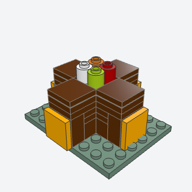
cross_display_standa freestanding plus-shaped shop table with a poster on the end of each arm and goods on top, built apart and placed.
A freestanding display table for the middle of a shop floor, with posters on its ends and goods on top.
Note: Alternate, in place of bracket_tread_stair: the book's step (a 1 x 2 brick, a bracket, a riser tile and a tread tile, 2 plates rise and 1 stud run) collides with the step below in every arrangement I tried, and I couldn't confirm it from the research. Posters are plain tiles; any printed 2 x 2 tile can go there.
x, y, z, color, posters, goods, seedbatch-9/cross_display_stand.py22885 + 3068b + 3795 (some of its parts weren't confirmed from the book; I'd pin them when writing it)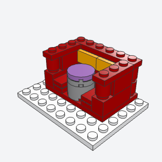
curved_bootha diner booth, a U of padded seat round a table on a round pedestal, built apart and placed.
A diner or cafe booth for figures to sit round a table, a U of padded seat with a tall back.
Note: The back's corners are round 1 x 1 bricks rather than 2 x 2 corner round bricks, which would lift the corner seat a brick above the rest. The table stands on a 2 x 2 round brick, since a 1 x 1 post can't sit under the middle of a 2 x 2 top on the grid.
x, y, z, facing, color, padding, tablebatch-9/curved_booth.py11211 + 3062b + 3941 + 14769 (some of its parts weren't confirmed from the book; I'd pin them when writing it)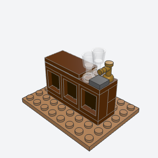
bar_countera pub's wooden bar, its front a row of window frames with dark panes standing in for raised panels, under a tiled top with a beer tap and glasses, built apart and placed.
The bar for a pub or tavern; window frames with opaque panes read as raised wooden panels.
Note: No curved end. The book's back shelf of bottles is wall_shelf.
x, y, z, panels, facing, wood, panes, topbatch-9/bar_counter.py60592 + 60601 + 4599b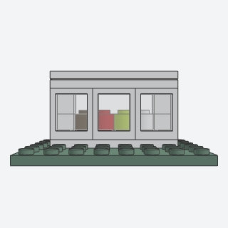
display_case_countera shop counter with a glass front and goods on show behind it, built apart and placed.
A glass-fronted shop counter with goods on show, for a bakery, sweet shop, or emporium.
Note: The glass is window frames with clear glass. Panels 1 x 2 x 1 (4865a, 4865b) and 1 x 4 x 1 (30413, 15207) have no floor studs in this library, so goods can't stand in them; no glass top.
x, y, z, length, facing, color, goods, seedbatch-9/display_case_counter.py60592 + 60601 + 3062b (some of its parts weren't confirmed from the book; I'd pin them when writing it)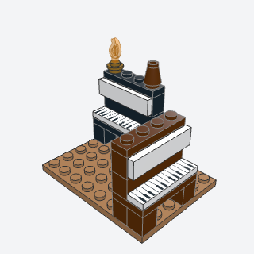
upright_pianoa piano 4 studs wide against a wall, its keyboard on a ledge at a seated figure's hands, with sheet music on its front and a candle on its lid, built apart and placed.
A piano for a parlor, a pub, or an apartment, against a wall with a chair in front.
Note: The keys tile (2431px0, made in White only) lies on the front row of a 2 x 4 plate over two legs instead of on a bracket, so the keyboard ties the body.
x, y, z, facing, color, candlebatch-9/upright_piano.py2431px0 + 30414 + 3020 (some of its parts weren't confirmed from the book; I'd pin them when writing it)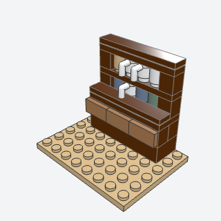
dresser_shelfa kitchen dresser, a cupboard with drawers and a worktop below and an open rack of shelves above with jars and cups in its cubbies, built apart and placed against a wall.
A kitchen dresser or tavern sideboard: a cupboard and worktop with open shelves of jars and cups above.
Note: The book builds a wall cabinet only; this adds the cupboard and worktop under it, the usual dresser shape.
x, y, z, width, shelves, facing, seed, color, drawersbatch-9/dresser_shelf.py30414 + 3005 + 3062b + 3899 (some of its parts weren't confirmed from the book; I'd pin them when writing it)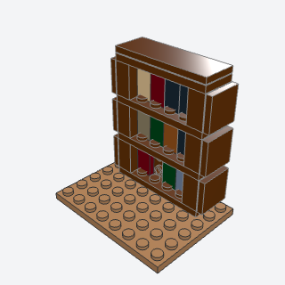
bookcasea tall bookcase for a figure's room, its shelves full of books whose spines are 1 x 2 tiles standing on side studs, built apart and placed against a wall.
A tall bookcase for a study, a parlor, or a shop, its books' spines facing out.
Note: The figure-scale one, not VV bookshelf_block. Books are 1 x 2 tiles stood on end on the side studs of 1 x 2 x 1 2/3 bricks, 5 plates tall, so a shelf is 6 plates.
x, y, z, width, shelves, facing, seed, color, booksbatch-9/bookcase.py22885 + 3069b + 3068b (some of its parts weren't confirmed from the book; I'd pin them when writing it)